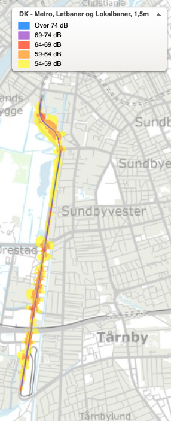
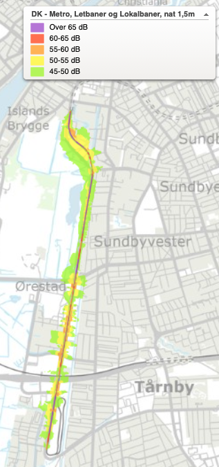

As mentioned in the introduction, this activity consists of three tightly linked tasks:
- Formalising the Domain of Discourse
- Auditing existing data
- Recording the Domain of Discourse
The name of this activity is deliberate: “Establishing the Data Framework”, not “Defining the Data Framework”. This emphasises that it is not a purely intellectual exercise done at a desk, but also includes manual labour. Alongside the conceptual work below — naming concepts, evaluating datasets, formalising rules — this activity also carries real manual labour: searching for, downloading, and organising existing data (Auditing existing data, below); going into the field to observe and record what does not yet exist as data; and finally building and populating the actual spatial table both of these feed into (Recording the Domain of Discourse, below). The Hermetic Example Workflow that follows narrates this labour rather than performing it, in keeping with its own deliberately clean, closed-system character. if you want to perform it yourself, see Part 3’s Primary Data Collection: Field Work, and the QGIS Backdrop Digitalisation note for the data-entry step that follows it.
Before we begin, we need to be clear on what data is. We take data to be the symbolic representation of information — a claim with a specific consequence: there is no data prior to some conceptual scheme that makes it countable as data about something. Information, in turn, is what results once the raw, unstructured spatial reality — what Kant called the sensoric manifold (Mannigfaltigkeit der Anschauung), prior to any conceptual synthesis — is organised through a set of concepts: the Cast of Characters formalised as the Domain of Discourse. Data is that information’s symbolic, recordable form — geospatial data being, simply, data whose symbolic representation additionally commits to a geometry, a commitment made explicit under Geometric Type below. This ordering is not incidental. It is why this activity formalises the Domain of Discourse before it records anything at all: without the concepts, there is no information yet to encode, and without information, “collecting data” is not yet a coherent instruction.
Formalising the Domain of Discourse.
In SemanticGIS, formalising the “Domain of Discourse” is not a technical task of creating database tables—that is recording —but the act of operationalising the universe of discourse. Boole himself narrows the unconstrained universe to “a less spacious field” once a discourse’s practical limits are made explicit; this manuscript directly adopts that idea of narrowing the “universe of discourse.” We use the term Domain of Discourse to denote this narrower, more strictly defined version of the Universe of Discourse. Where the Universe of Discourse holds concepts in their unconstrained, ideal form, the Domain of Discourse holds them formalised: we call a concept, once bounded by the five commitments below, a Cognised Existence (die erkennbare Existenz)—a mass noun, denoting a kind rather than a countable instance of it. This formalisation requires five commitments that the Universe of Discourse does not make:
- Discrete or Continuous
- Thematic specification
- Spatial and temporal resolution
- Attribute and geometry typing
- Topological and Spatial-Relationship Constraints
Discrete or Continuous
Before we can even ask whether a phenomenon fits our thematic specification, we need to settle something more basic: is the Cognised Existence itself a bounded, individually identifiable thing, or a sampled instance of a continuous field with no natural boundary of its own? This distinction may already be settled in the description of the universe of discourse. A venue is unambiguously discrete — it either exists at a location or it doesn’t. But not everything in the sensorial manifold is best cognised this way: temperature, air pressure, elevation, and — in the party zone mapping context — “vibrancy” are all better understood as continuous gradients than as discrete, countable things.
This is not a technical detail to be settled later, once we get to typing (below); it is a precondition for everything that follows. A “Public Social Space” of 2 sq meters of grass and a single bench only makes sense to test against a Minimum Mapping Unit (see “The spatial and temporal resolution,” below) because a Public Social Space is discrete — it has a boundary a threshold can be measured against. Vibrancy has no such boundary; asking “how many square metres of Vibrancy is enough for it to exist” is not a harder version of the same question, it is not a coherent question at all. Getting this wrong at the outset — silently assuming a phenomenon is discrete because that is the default we reach for — means the second commitment (MMU) may simply not apply, and we will not discover that until it is too late to matter.
It is also worth being precise about what is discrete or continuous here. The Cognised Existence itself is what carries this character — not any individual observation of it. A single temperature reading is a discrete measurement, taken at one place, at one moment. The Cognised Existence “temperature” is nonetheless continuous: it is what that reading, and every other reading like it, is a sample of. We return to this distinction, and to how a continuous Cognised Existence gets a spatial Geometric Type of its own, under “Attribute and geometry typing,” below.
Noise gives a sharper illustration, because this workflow already needs it twice, in two different guises. The Friction Point in our Cast of Characters is discrete: it is an individual noise complaint, filed at a specific address on a specific date. But “how loud is it here” is a different question entirely, and it is not discrete — ambient sound level is a continuous field, sampled at points but with no boundary of its own, exactly like Vibrancy. Confusing the two — treating “Noise” as though the complaints dataset already tells us the ambient sound field, or as though a sound-level field could stand in for the discrete fact of a complaint — is exactly the kind of error settling this commitment first is meant to prevent.
The thematic specification
Writing a thematic specification is absolutely not a trivial task, and what it must establish differs depending on the discrete or continuous character already settled above.
For a discrete Cognised Existence, thematic specification is a boundary test. The following is a translation from the official Danish Geodanmark specification of a building:
Building represents a permanent building, including garage, carport, tank/silo, conservatory (sunroom), glazed extension, shed, lean-to roof, covered area, fixed awning on a building, platform roof (station canopy), houseboat, and similar. But not mobile home, caravan, tent, or similar.
In addition, a planned (projected) building may also be represented. Outside an Area Polygon, a building with an area < 25 m² is not present i.e., not captured/represented, unless the municipality has opted in to include this.
Within an Area Polygon, a building with an area < 10 m² is not present, unless the municipality has opted in to include this.
A building with ‘building type’ = “Tank/Silo” occurs only if it stands on the ground, and may be indicated as the outline of several small silos i.e., represented as a single combined outline.
A building has, for computational purposes, been given right-angled corners, where it is assessed that the physical building also has them.
A building under construction is registered at the estimated extent of the final building, with ‘status’ = “Under construction” and ‘geometry status’ = “Provisional.”
It would be a mistake to read a document like the GeoDanmark building specification and conclude that formalisation has eliminated judgement. Look closely at its own key term: Bygning repræsenterer en permanent bygning—“Building represents a permanent building.” The specification never defines permanence. It cannot simply mean “not temporary,” since the same document separately and explicitly provides for buildings under construction—themselves, in an everyday sense, temporary—to be registered all the same, provisionally, pending completion. Nor is this an isolated case: the phrase “og lignende” (“and similar”) appears twice in four short lines, silently extending both the included and the excluded categories by unstated family resemblance rather than stated criterion, and the verb skønnes (“is assessed,” “is judged”) appears twice more, each time openly delegating a decision—whether a building’s corners should be computed as right-angled, how far a building under construction should be estimated to extend—back to the individual practitioner in the field.
This is not a flaw unique to GeoDanmark, nor a sign of carelessness in its drafting. It is a near-universal feature of thematic specification, and an important lesson in its own right: formal precision at the level of structure—MMU thresholds stated to the square metre, explicit inclusion and exclusion lists, defined attribute fields—very often coexists with, and indeed depends upon, unexamined vernacular judgement at the level of meaning. A specification can be extremely rigorous about where the line is drawn (10 m² inside an Area Polygon, 25 m² outside it) while remaining almost entirely silent on what is being measured in the first place (what, precisely, makes a structure permanent rather than merely long-standing). The practitioner does not escape judgement by consulting a formal specification; the specification simply relocates the judgement to a different, and not always more visible, point in the process—and a well-stewarded workflow must be prepared to notice when it has done so.
For a continuous Cognised Existence, there is no individual phenomenon to test against a boundary — a field has no discrete instances to admit or exclude. Thematic specification instead has to settle what varies within the field, and along which dimensions, before it stops being the same Cognised Existence and becomes a different one. Noise, introduced above, is the case in point, and Denmark’s own noise guidance answers it in a way worth looking at closely, because the answer turns out not to be simply “two numbers instead of one.”
The Danish Environmental Protection Agency (Miljøstyrelsen) sets a guideline limit value (vejledende grænseværdi) for daytime/evening train noise near housing of Lden 64 dB. For night-time noise, however, the agency is explicit that no such guideline limit exists: “der er ikke vejledende grænseværdier for natstøjen, Lnight.” What exists instead is a risk indicator, not a limit — based on the available evidence, roughly a 15% risk of sleep disturbance is associated with levels above Lnight 62 dB for train noise. That number is close to the daytime figure, but it is not the same kind of number: one is a threshold a project is formally judged against, the other a probabilistic association Miljøstyrelsen itself declines to call a limit at all (Miljøstyrelsen — Kortlægning af støj).


The published maps make the same point visually: the day map and the night map for the same stretch of the Ørestad metro line use entirely different colour bands, not merely shifted ones. So the day/night split here is not “noise is a bit stricter at night” — a Domain of Discourse that treats it that way has already made an unstated decision. Day and night Noise, cognised as two separate Cognised Existences, differ not only in threshold but in regulatory kind: one tested against a defined limit, the other against a risk association that is explicitly not a limit. Whichever way this workflow’s Domain of Discourse settles it, the choice is not free: if the Vibrancy Gradient is later defined, in part, from Noise, an unresolved day/night split in Noise’s own thematic specification is inherited directly by Vibrancy, exactly as the houseboat’s unresolved status was inherited by venue above.
Thematic specification, in either form, is an intensional definition of each Cognised Existence — a statement of what a phenomenon must be, or what a field must remain, not merely a list of phenomena or readings it happens to include.
3. The spatial and temporal resolution
The spatial resolution really addresses how large a discrete Cognised Existence must be in order to “exist”: is a “Public Social Space” of 2 sq meters of grass and a single bench a “Public Social Space” in the context of party zone mapping? It is common to call this minimum size the Minimum Mapping Unit (MMU). This question does not apply to a continuous Cognised Existence like Vibrancy or ambient Noise — there is no minimum area a gradient must occupy in order to “exist.” What a continuous Cognised Existence needs instead is a minimum sampling density: how closely packed the underlying measurements need to be before the surface interpolated from them can be trusted. The temporal resolution plays the same role as MMU, but in time, and applies to both the discrete and continuous cases alike. Is a pop-up bar that is only present on Fridays in the summer months considered a venue in the party zone mapping context?
4. Attribute and geometry typing
A fourth commitment included in the “Domain of discourse” is typing, in two parts: for each property of our Cognised Existence, we specify a “scale of measurement,” and for the Cognised Existence itself, we specify a Geometric Type. For attributes, we use the concepts of Nominal, Ordinal, Interval and Ratio (NOIR) as presented in (Stevens, 1946). As we will see when we reach the Analytical Schema, both the scale of measurement and the Geometric Type dictate which operations can legitimately be performed: you cannot calculate the average venue capacity if capacity is registered as “small,” “medium,” or “large,” any more than you can calculate the area of something recorded as a line.
-
Nominal: Qualitative labels (e.g., ‘Bar’ vs ‘Park’). Only counting and grouping are allowed.
-
Ordinal: Ranked categories (e.g., ‘Low’, ‘Medium’, ‘High’ noise). Medians are allowed; means are not.
-
Interval: Scales where the difference is meaningful, but there is no true zero (e.g., Temperature, Time of Day).
-
Ratio: Quantitative values with a true zero (e.g., Distance, Capacity). All mathematical operations are allowed.
For the spatial representation, we use the same logic under the name Geometric Type: Point, Line, Polygon, or Field. Stevens was not thinking of spatial data in 1946 — NOIR says nothing about geometry — so Geometric Type is this manuscript’s own extension of his idea to the spatial dimension, and it governs legitimate operations in exactly the same way NOIR does: an area calculation is no more askable of a line than a mean is askable of a nominal attribute.
The choice of Geometric Type might seem self-evident, but this is far from the case. The most common dilemma is between a polygon and a line or point. Here the choice is primarily governed by whether the spatial extent of the Cognised Existence is of importance to the questions the workflow will ask of it. A road can easily be typed as a line for network analysis, but if we are looking at extending the width of the road and need to understand which spatial conflicts might arise from this, a polygon representation is a must. Likewise, pylons might be typed as points in an electrical supply management context, but if we are looking at biology, the grassy area associated with the pylon is a polygon.
Continuous Cognised Existences raise the dilemma in a sharper form, because it becomes easy to conflate the Cognised Existence’s Geometric Type with the geometries that surround it at other stages of the workflow. The Cognised Existence itself — temperature, air pressure, elevation, or the party zone case’s Vibrancy Gradient — is typed, once and for good, as a Field: this follows directly from calling it continuous under “Discrete or Continuous,” above, and in SemanticGIS we hold to it consistently. That Field is not, however, what arrives first. As the earlier note on measurement versus Cognised Existence already established, the individual Lidar returns from an elevation survey are discrete measurements, each an evidentiary sample rather than an instance of the elevation Field itself; it is these that are collected and audited as Points. Turning them into the Field the Domain of Discourse actually declared — interpolating the point cloud into a continuous surface — is still Establishing the Data Framework’s own work, carried out at Recording: it is precisely how Recording gives the elevation Cognised Existence a digital shape whose Geometric Type faithfully matches what Phase Three committed to, rather than merely storing whatever geometry happened to arrive from the field. The Analytical Schema, downstream, takes the already-interpolated Field as its Recorded input; it does not perform the interpolation itself. Isolines, by contrast, belong to a different Vantage Point entirely — they are not a Geometric Type of anything in this workflow, but one possible representational choice made at Designing Spatial Results Communication, a cartographic convention for rendering an already-Recorded Field legible on a static map. The Cognised Existence’s Geometric Type — Field — never changes; what changes, from collection to Recording to Communication, is which geometry is in front of the practitioner at that stage, and only one of those three (the Field itself) is the Geometric Type the Domain of Discourse commits to.
5. Topological and Spatial-Relationship Constraints
The first four commitments constrain each Cognised Existence in isolation: whether it is discrete or continuous, what it is, how large it must be, and what may legitimately be computed from its attributes. The fifth constrains how instances of the Domain of Discourse are permitted to relate to one another — and it comes in two distinct kinds the practitioner must learn to tell apart, because each is tested by a different operation once the Analytical Schema is authored.
Topological constraints describe qualitative relations between entities’ boundaries — containment, adjacency, overlap, disjointness — that hold or fail to hold regardless of exact distance, scale, or shape. A topological relation is invariant under continuous deformation: stretch, shrink, or redraw a boundary, and the relation survives unless the deformation is severe enough to cross the boundary itself.
Example — Tivoli: The Domain of Discourse excludes any Venue that is topologically contained within the Tivoli Gardens polygon, because Tivoli itself is modelled as a single Venue. This is a pure containment rule: it makes no difference how far inside Tivoli a given premises sits, or how large or small Tivoli’s boundary is drawn — only whether the candidate Venue’s geometry falls within it. No distance measurement is involved; the constraint would hold identically if Tivoli’s fence line were redrawn ten metres in or out tomorrow.
Spatial(-relationship) constraints, by contrast, are quantitative: they depend on measured distance, direction, or another metric property, and require a coordinate reference system and units to evaluate at all. Unlike a topological relation, a spatial constraint is not scale-invariant — enlarge the map, and a fixed-distance buffer captures a different set of entities.
Example — the harbour front: A Public Social Space is only considered related to the harbour front if it lies within 25 metres of it. This is a metric buffer test: a measured distance, in a defined unit, against a defined threshold — the same ratio-typed relation the NOIR commitment above prepares the practitioner to specify.
Compound constraints. The two kinds are frequently combined into a single domain rule, and the practitioner’s task is to decompose the rule before it can be operationalised. The harbour-front rule, stated in full, is not simply “within 25 metres”: a Public Social Space within 25 metres is nonetheless excluded if it is separated from the harbour front by a road carrying car traffic. This second clause is not metric — a Public Social Space 3 metres from the water on the far side of a four-lane road is excluded, while one 20 metres away with unobstructed access is included. It is a constraint on connectivity, not distance, and it cannot be tested by a buffer at all; it requires a barrier-intersection or network-connectivity test against the road layer. A Domain of Discourse that states only “within 25 metres” and leaves the severance clause implicit will pass validation at the desk and fail in the field, precisely because the two clauses are tested by different operations and neither implies the other.
This decomposition matters downstream, at Authoring the Analytical Schema: a topological containment test, a metric buffer, and a connectivity/barrier test are three different mathematical verbs. As with the houseboat’s contested boundary under thematic specification, the apparent precision of “within 25 metres” can quietly smuggle in an unstated judgement — here, what counts as “a road carrying car traffic” as opposed to, say, a shared pedestrian and cycle path, which must itself be settled in the thematic specification for road before this fourth commitment is even testable.
Confronting the Sensoric Manifold
Only once the Domain of Discourse has been formalised does the practitioner turn to the sensoric manifold proper — the raw, unstructured given of spatial reality, prior to any conceptual synthesis. This is not a further desktop audit of data collected by others; that was Phase Two. It is direct confrontation with the field itself, and it is performed even where the expected outcome is simple confirmation.
Confronting the Sensoric Manifold has a single function: validation. Does the formalised Domain of Discourse survive contact with the manifold? Field observation may reveal that a thematic specification, an MMU, or a typing decision formalised above does not, in practice, hold against what is actually out there. A venue filtered in by industry (DB25) code may turn out, on the ground, to have closed; a Public Social Space defined on paper may turn out, on the ground, to fall below the MMU that was supposed to govern it.
This is not data recording, and the phase performs no second, parallel function of harvesting. But where no existing dataset survives, the physical activity of validating — checking whether this venue, this space, this instance conforms to what the Domain of Discourse specified — is more or less indistinguishable from the physical activity of collecting data. The difference is purpose, not motion.
Although this phase is not data recording, it contains all the moves of a data recording. We therefore need to operationalise the “Domain of Discourse” into a data-recording and storage schema — checking whether “Public Social Space” holds up against reality requires something to record the check against: at minimum, a draft table with a set of fields, a way of marking what was found and a field registration guide. See Operationalising Confronting the Sensoric Manifold: data specification in Part 3 for a full worked treatment of what this distinction means in practice. Strictly speaking, Confronting the Sensoric Manifold tests this provisional schema, not the Domain of Discourse directly — and a finding that does not fit cleanly is not automatically evidence that a thematic specification, MMU, or typing decision was wrong. It may instead be evidence that the schema built from them was not yet equal to what the manifold contains. In some cases it might even be our “Univers of Discourse” that does not match and this confrontation often triggers an important back-flow in order to identify the root source of the mismatch between the registration schema and the Sensoric Manifold.
Auditing existing data
The purpose of this phase to match the concepts of the Universe of Discourse (the ideal model) with the messy reality of available data. This phase is actually performed twice first, as presented here, after the universe of discourse has been formulated. Here the purpose is a broad interrogation of existing data to identify existing datasets that potentially can be used. This is a non-trivial operation and may include analytic operations performed on one or more existing datasets in order to transform them if they do not directly match the concepts of the Universe of Discourse. In its simplest form, it can represent the “venue” concept as a filtered set from the firm’s database. After the concepts have been more precisely defined in the “Domain of discourse” (Phase 3). The potential datasets from the first run of this phase are reevaluatet ot see if they also match the new, more precise definitions.
1. The Evaluation Matrix: Accept, Transform, Reject
For every concept defined in your “universe of discourse”/“Domain of discourse”, you must audit the available “Wild Data” using three possible actions:
✅ Accept: The Perfect Match
The data aligns perfectly with your “universe of discourse”/“Domain of discourse”, It can be accepted into your “Analytical schema”.
- Example: Official municipal boundaries.
🔁 Transform: Cleaning and Reconciling
A dataset or datasets contains the information you need, but the information is fragmented or incorrectly structured. You must clean and reconcile it to make it compatible with your “Universe of discourse”/“Domain of discourse”.
-
Fragmentation: Real-world data is often split across systems. For example, the Danish Business Register (CVR) holds industry codes (DB25), but lacks geometry. You must Join it with the Address Register (DAR) to be able to locate the firms in space
-
Schema Mapping: Converting “Wild” text (e.g., “Open all night”) into data that match your organisation (e.g.,
Closing_Time: 05:00).
❌ Reject: Triggering Procurement or Backflow
You are unable to find a dataset that aligns with your “Universe of discourse”/“Domain of discourse”; you have two choices:
-
Direct Procurement (Fieldwork): You go out and observe the phenomena yourself. In SemanticGIS, fieldwork is treated as “Primary Data Collection”
-
Backflow: You return to Phase 1, and humble your model, changing your ontology to match what is actually available.
2. The Technical Reality, the pedagogical dilemma
For didactic reasons, we separate analytical operations from the data framework, but in practice, operations like “joining tables” and “filtering” are also part of data management and are necessary steps in auditing existing data. Here we will not cover the operations; they will be covered as part of the analytical framework
- The venue example: In the firm database (CVR), we can find information about ownership, the Industry Code (NACE codes), and the address. of any Danish official firm. To represent the concept “venue”, we need to filter the dataset using relevant Industry Codes and geocode the address to determine the venue’s location. We might even need to perform a spatial clipping operation to remove venues that are not relevant for the municipality’s issues, like those in closed amusement gardens like Tivoli
Recording the Domain of Discourse
The preceding phases are conducted, deliberately, without committing to any particular software or storage format. Formalising the Domain of Discourse produces rules a Realisation can be tested against, not a database.
This phase has two parts. Schema comes first: a spatial table is defined whose geometry, field names, and field types faithfully carry the Domain of Discourse’s five commitments — a nominal or ordinal attribute becomes a text or coded field, a ratio or interval attribute becomes a numeric field, and the geometry column is set to match the Cognised Existence’s declared Geometric Type: point, line, or polygon where it is discrete, or Field — recorded as such, e.g. a raster — where it is continuous. Where a continuous Cognised Existence’s Field is itself realised from discrete inputs (elevation from Lidar returns, say), producing that Field from its inputs is still Recording’s own work, not the Analytical Schema’s. Population follows: the re-evaluated Accept/Transform Realisations from Auditing existing data, and the Collection Realisations harvested at Confronting the Sensoric Manifold, are entered into that same schema — whether by loading and joining existing registers, or by digitising a field observation directly.
Both provenances converge on one schema deliberately: a Venue Realisation transformed from the CVR + DAR join and a Public Social Space Realisation digitised from a field sketch should be indistinguishable in the finished spatial table — same fields, same types, same constraints — even though one has never touched a notebook and the other has never touched a register. That convergence is what makes the table usable by the Analytical Schema at all: the Schema’s mathematical verbs do not know or care where a row came from, only whether it honours the NOIR typing and constraints the Domain of Discourse already settled.
How population actually happens for field-sourced Realisations depends on the scale and maturity of the project. Where the Domain of Discourse is still liable to revision — a small project, or the pilot phase of a larger one — the practitioner often works from a table sketched on paper, or marks against a printed aerial photograph or map, and only digitises afterwards, at a desk, against the schema already defined. This deferral is what keeps the loop back to Formalising the Domain of Discourse cheap — a thematic specification or MMU that fails contact with the manifold can be revised before a single row has been committed to the schema. Once a project has passed that pilot stage and the Domain of Discourse is no longer expected to move, the balance often shifts: field-side digitisation tools — apps and dedicated field-registration software that write directly into a schema-conformant structure — trade away that cheap iteration for the efficiency of populating the schema in the field itself, with no separate desk-bound digitisation pass required. Which mode is appropriate is a project-management judgement, not a methodological one; SemanticGIS requires only that, whichever medium mediates it, the Realisations that reach the schema answer to the same fields, types, and constraints regardless of provenance.
Recording is not, itself, an application of the Analytical Schema — but this does not mean GIS operations of the buffer/overlay/interpolate variety are absent here. Consider the Tivoli containment rule already established at Formalising the Domain of Discourse: venues that fall inside the amusement garden’s boundary are not Recorded as separate Venue rows at all, but overlaid against that boundary, erased, and their properties aggregated onto the single “Tivoli” venue. That is a real GIS operation — an overlay, a spatial join, an aggregation — and it happens at Recording. What keeps it from being an application of the Analytical Schema is not the verb it invokes but the question it answers: this overlay exists only to make the Recorded table conform to a topological constraint the Domain of Discourse already fixed at Phase Three, and it commits nothing about how the recorded Venue Realisations will later be analysed to answer the brief’s actual spatial question. The Analytical Schema, downstream, authors and executes the same kind of verb — but to compute the analytical answer itself, not to enforce a rule already settled. It is this distinction of purpose, not merely the presence of a GIS application or even which operations it performs, that keeps Recording separate from Executing the Analytical Schema (see Part 1, §1.2). For the mechanics of actually doing this in QGIS — creating a schema-conformant layer, digitising against an aerial-photo backdrop, and reconciling a field sketch against it — see the Backdrop Digitalisation note in Part 7.